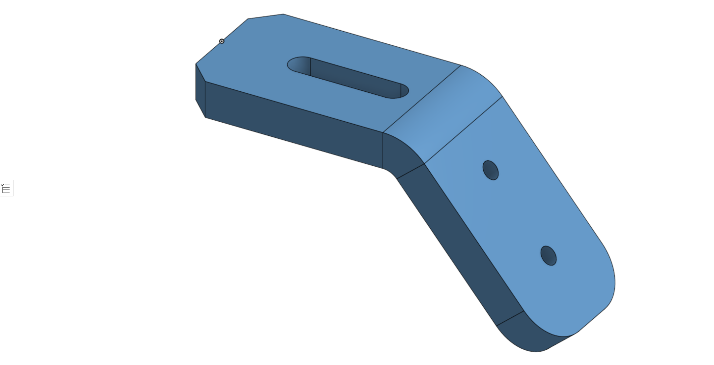
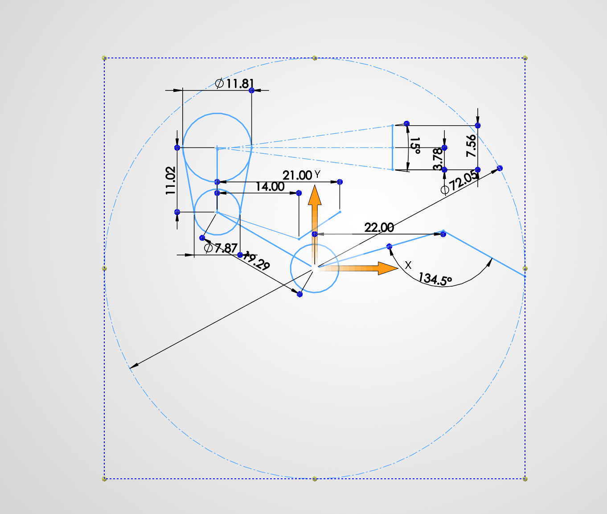

Selected work
Projects
Documenting class projects, prototypes, and ideas taking shape.

Project 01
Onshape Design
One of the many parts I have created using CAD

Project 02
Percy Model, designed in SolidWorks
In Formula SAE, the design process is taken very seriously. One of the most important parts is how the driver fits inside the car. Percy is a anthropometric reference that is most commonly used to represent the space that the average driver would occupy in the car.
Project 03
Engineering Analysis
Share an analysis, experiment, or technical challenge you explored.